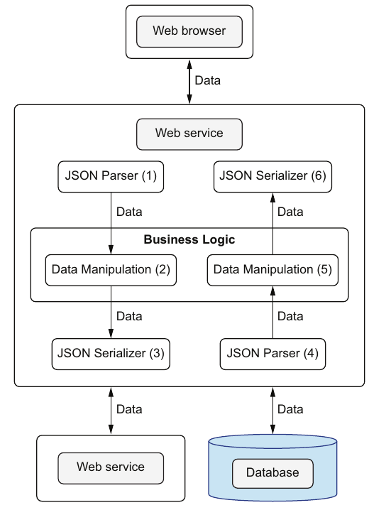

فصل ۱۱ · صص. ۲۲۰–۲۴۴
سرویسهای وب
Web services
Data-Oriented Programming, 1st Edition
سنگنشان پسین غنی کردن خبر کتاب است. نتیجههای جستوجو باید در دسترس بودن از پایگاه داده را با خبر گسترده از Open Library Books API کنار هم بگذارند. آن API برای برخی کتابها دهها فیلد و برای برخی دو سه فیلد برمیگرداند، پس دادهاش تنک و پیشبینیناپذیر است (ص. ۲۲۱). اصل جو این است که درون سیستمهایمان را همانطور بسازیم که بیرونشان را. مؤلفههایی که سر سیماند دادهی زبانمستقل مانند JSON مبادله میکنند. مؤلفههای درون برنامه هم باید همانطور مجموعههای دادهی عمومی و immutable مبادله کنند، پس تنها نام فیلدها را میدانند، نه تعریف کلاس یکدیگر را. این سستجفتشان نگه میدارد (صص. ۲۲۰–۲۲۳).
آن endpoint درخواست جستوجوی client را، با title و همان fieldsی که برمیگرداند، بهشکل mapی اعتبارسنجیشده میگیرد (صص. ۲۲۵–۲۲۷). بعد سه کار میکند:
- هر کتابی را از Open Library میآورد، اعتبارسنجی میکند، و با دو بار
_.pickتنها فیلدهای بهکارآمده و خواسته را نگه میدارد (صص. ۲۲۷–۲۳۱). - خبر را پیش میفرستد بی بازکردنش، مانند پیکهایی که نباید نامهی زیر دستشان را بخوانند (صص. ۲۳۱–۲۳۲).
- خروجی پایگاه داده و Open Library را کنار هم میگذارد. جو تودرتو کردن و درهمآمیختن را میسنجد (جدول ۱۱.۱)، و تئو یک
joinArraysعمومی با_.keyByو_.mergeمینویسد (صص. ۲۳۲–۲۳۹).
پروژه سر وقت تحویل میشود. تئو ارتقا میگیرد و هدیههای فرزندان جو را میخرد: پهپاد DJI Mavic Air 2 برای نریا و AirPods Pro برای اورلیا (ص. ۲۴۴).
فهرست خود فصل (از فهرست مطالب کتاب)
از فهرست خود کتاب، یعنی bookmarkهای PDF؛ شمارهی صفحهها چاپیاند.
- ۱۱.۱ درخواست ویژگی دیگری — ص. ۲۲۱
- ۱۱.۲ ساختن درون مانند بیرون — ص. ۲۲۲
- ۱۱.۳ نمایاندن درخواست client بهشکل map — ص. ۲۲۵
- ۱۱.۴ نمایاندن پاسخ سرور بهشکل map — ص. ۲۲۷
- ۱۱.۵ پیش فرستادن خبر — ص. ۲۳۱
- ۱۱.۶ غنی کردن نتیجهی جستوجو سر کار — ص. ۲۳۴
- خلاصه — ص. ۲۴۴
از کتاب
مقدمه
کد JavaScript این فصل، مانند فصل ۱۰، چنان نوشته شده که گویی I/O synchronous است؛ و کد واقعی از async و await کار میکشد (ص. ۲۳۰).
از کتاب
۱۱.۱ درخواست ویژگی دیگری
پس از تحویل سر وقت سنگنشان پایگاه داده، نانسی زمان تخمینی غنی کردن با Open Library Books API را میخواهد. شمار صفحه و وزن و قالب فیزیکی و موضوعها و مانند آن، جای خبر کتاب پایگاه داده را میگیرند، جز در دسترس بودن (ص. ۲۲۱).
از کتاب
۱۱.۲ ساختن درون مانند بیرون
قدمهای جریان داده درون سرویسی وب (ص. ۲۲۲):
- درخواستی از clientی بگیرید.
- منطق کسبوکار را روی آن درخواست پیاده کنید.
- داده را از سرچشمههای بیرونی بیاورید، مانند پایگاه داده و سرویسهای وب دیگر.
- منطق کسبوکار را روی پاسخ سرچشمههای بیرونی پیاده کنید.
- پاسخ را به client بفرستید.
سر سیم، قالب داده که بیشتر وقتها JSON است، به زبان مؤلفهها بسته نیست. درون برنامه، OOP سنتی آن اصطلاح را میشکند: برای دسترسی به عضوی از کلاسی، مؤلفهای باید تعریف آن کلاس را وارد کند. مؤلفههای DOP با مجموعههای دادهی عمومی گفتوگو میکنند، که هیچ دانشی از درونههای مؤلفههای دیگر نمیخواهد، تنها نام فیلدها (ص. ۲۲۳).


prediction API ما درخواست JSON میگیرد و پاسخ JSON میدهد؛ اگر درونش هم map باشد، تبدیل لایهای لازم نیست.
?نوبت شما · چرا پاسخ API را مستقیم از map نتیجهی کوئری میسازید و برای هر endpoint کلاس DTO نمینویسید؟دیدن پاسخ
افزودن فیلد به پاسخ فقط کوئری را عوض میکند و schema پاسخ را با JSON Schema در مرز اعتبارسنجی میکنید. کتاب دادهی درون را همشکل دادهی بیرون میخواهد تا ترجمه حذف شود (صص. ۲۲۲–۲۲۵).
از کتاب
۱۱.۳ نمایاندن درخواست client بهشکل map
نقش client باید تصمیم بگیرد کدام فیلدهای Open Library آورده شوند؟ تئو نخست endpointهای جدا برای موبایل و دسکتاپ پیش میگذارد. جو صفحههای خروجی گسترده و پایه را میافزاید، که چهار endpoint میشد، و تئو به یک endpoint تنها رضا میدهد که میگذارد client برگزیند (ص. ۲۲۵). بار آن {"title": "habit", "fields": ["title", "weight", "number_of_pages"]} است (listing ۱۱.۱). چارچوبهای وب معمولاً بازش میکنند: Express یا Spring یا Django یا Ruby on Rails یا ASP.NET. دستی، در JavaScript JSON.parse است و در Java fromJson(s, Map.class) از Gson (listingهای ۱۱.۲ و ۱۱.۳، ص. ۲۲۶). طرح درخواست مقدار fields را به enumی از فیلدهایی میبندد که نانسی میخواهد نمایانده شوند (listingهای ۱۱.۴ و ۱۱.۵، صص. ۲۲۶–۲۲۷).
از کتاب
۱۱.۴ نمایاندن پاسخ سرور بهشکل map
پرسش GET https://openlibrary.org/isbn/978-1982137274.json فیلدهای زیادی برای 7 Habits of Highly Effective People برمیگرداند: کلید نویسندهها و created و full_title و isbn_13 و زبانها و number_of_pages که ۴۳۲ است و publish_date که ۲۰۲۰ است و publishers و بازنگریها و subtitle و title و works و بیشتر (listing ۱۱.۶، صص. ۲۲۷–۲۲۸).
صافی دوبارهی فیلد (صص. ۲۲۹–۲۳۱): تنها فیلدهایی را که نانسی روا میدارد نگه دارید، بعد تنها آنهایی را که client خواسته. تابع OpenLibraryDataSource.bookInfo آن را در چهار قدم میکند (listing ۱۱.۹):
- پاسخ را بیاورید و باز کنید.
- آن را با طرح Books API اعتبارسنجی کنید، که
allOfوanyOfش دستکم یک فیلد ISBN را اجبار میکند (listing ۱۱.۸). سر شکست، خطای «Internal error: Unexpected result from Open Books API» را بیندازید. - عبارت
_.pick(_.pick(rawInfo, relevantFields), requestedFields)را پیاده کنید. - مقدار
isbnرا روی خروجی بگذارید، تا آن دو سرچشمه دیرتر کنار هم گذاشتنی باشند (ص. ۲۳۱).
امتحان کنید
جریان غنی کردن
باز کردن در صفحهی کامل ↗ · این شبیهسازی مدل خود vault از سازوکاری است که کتاب شرح میدهد.
از کتاب
۱۱.۵ پیش فرستادن خبر
در OOP سنتی، تئو برای هر گونه خبر کتاب کلاسی میساخت: DBBook و OpenLibraryBook و CombinedBook. آن به رویکردی پویا نمیخورد که client فیلدها را تصمیم میگیرد، و کلاسها وقتی داده تنها پیش فرستاده میشود هیچ ارزشی نمیافزایند (ص. ۲۳۱).
داستان جو (صص. ۲۳۱–۲۳۲): هوگو از دوستش ویلی میخواهد گل و نامهای عاشقانه را به نامزدش آیریس برساند. ویلی با افتخار گزارش میدهد که سبک نوشتن هوگو را پسندیده؛ نامه را خواند «تا وظیفهام را وفادارانه انجام دهم». روش OOP سنتی مانند ویلی است: برای پیش فرستادن خبر، برنامهنویسان OOP «نامه را باز میکنند» و با کلاسهای ویژه مینمایانندش. روش DOP آن را در ساختارهای دادهی عمومی پیش میفرستد.
| حسن | عیب (جدول ۱۱.۱، ص. ۲۳۲) | |
|---|---|---|
تودرتو کردن با فیلد extendedInfo | نیازی به چرخاندن ناسازی نیست | خروجی تخت نیست |
| درهمآمیختن | خروجی تخت است | چرخاندن ناسازی لازم است |
تئو امید دارد که آن دو map هیچ فیلدی را شریک نباشند، پس با _.merge از فصل ۵ درهم میآمیزند (listingهای ۱۱.۱۰ تا ۱۱.۱۲، صص. ۲۳۲–۲۳۳). پایگاه داده isbn و available را میدهد؛ و Open Library باقی را. طرح پاسخ سه فیلد title و isbn و available را اجبار میکند (listing ۱۱.۱۳، صص. ۲۳۳–۲۳۴).
امتحان کنید
تودرتو یا درهم
باز کردن در صفحهی کامل ↗ · این شبیهسازی مدل خود vault از سازوکاری است که کتاب شرح میدهد.
از کتاب
۱۱.۶ غنی کردن نتیجهی جستوجو سر کار
قدمهای جریان دادهی غنی کردن (ص. ۲۳۴):
- درخواستی از clientی بگیرید.
- آن پرسش و فیلدهایی که باید از Open Library آورده شوند را بیرون بکشید.
- کتابهایی را که با آن پرسش میخوانند از پایگاه داده بیاورید.
- برای هر ISBN خورندهای خبر را از Open Library بیاورید.
- فیلدهای لازم را از پاسخهای Open Library بیرون بکشید.
- خبر پایگاه داده را با خبر Open Library کنار هم بگذارید.
- پاسخ را به client بفرستید.
- بخش پایگاه داده تنها
isbnوavailableرا میخواهد، بی هیچ join (listing ۱۱.۱۴، صص. ۲۳۴–۲۳۵). - مفهوم interface Open Library پرسش دستهای ندارد، پس
multipleBookInfoتابعbookInfoرا روی ISBNها مینگارد. کتاب تظاهر میکند که_.mapبا تابعهای asynchronous کار میکند؛ و کد واقعی ازPromise.allکار میکشد تا درخواستها را موازی بفرستد (listing ۱۱.۱۵، صص. ۲۳۵–۲۳۶). - عمل join کردن: تئو نمیتواند فرض بگیرد هر دو آرایه کتابها را به همان ترتیب میآورند، و دو hash map کلیدخورده با ISBN آرزو میکند. تابع
_.keyByمیسازدشان؛ مانند_.groupByاست ولی فرض میگیرد هر دسته یک عضو دارد و آخری را نگه میدارد (listingهای ۱۱.۱۶ و ۱۱.۱۷، صص. ۲۳۶–۲۳۷). تابع عمومیjoinArrays(a, b, keyA, keyB)هر دو آرایه را کلید میزند، آن دو map را درهم میآمیزد، و مقدارها را برمیگرداند (listingهای ۱۱.۱۸ و ۱۱.۱۹، صص. ۲۳۷–۲۳۹). نام کلیدها میتواند میان آن دو آرایه فرق کند. - آن endpoint درخواست را اعتبارسنجی میکند، میآورد، join میکند، پاسخ را اعتبارسنجی و برمیگرداند. تابع
Library.searchBooksByTitleآن را باJSON.parseوJSON.stringifyمیپوشاند (listingهای ۱۱.۲۰ تا ۱۱.۲۵، صص. ۲۳۹–۲۴۳).
تئو میاندیشد که کلاسها وقتی تنها تابعهای بیstate روی entityهای همانند را گرد میکنند خیلی کمپیچیدهترند (ص. ۲۴۳). جو گزارش میدهد که خواندن The Power of Habit جویدن ناخنش را بس کرد (ص. ۲۴۳).
تحویل سر وقت (ص. ۲۴۴): تئو داستان هیزمشکن را یاد میآورد؛ وقت گذاشت تا ارهاش را تیز کند. پروژه کامیاب میشود و تئو ارتقا میگیرد. در Westfield San Francisco Center هدیههایی را که به فرزندان جو بدهکار است میخرد، و گردنبندی و گوشوارهای برای همسرش جین.
Vault note: listingهای آن endpoint چند لغزش دارند که کد را همانطور که چاپ شده از اجرا بازمیدارد:
- مفهوم listing ۱۱.۱۵ مقدار
bookInfoSchemaرا باdbSearchResultSchemaاعتبارسنجی میکند بهجایrawInfoرا باbookInfoSchema؛ و listing ۱۱.۲۲ درست داردش. - تابع
multipleBookInfoآرگومانهای_.mapرا برگشته میفرستد. - آن SQL چنین میخواند:
WHERE title = like '%$1%'. - مفهوم listing ۱۱.۲۴ آن enum از
fieldsرا"type": [...]مینویسد. - همهی listingهای ۱۱.۲۰ و ۱۱.۲۵ تابع
joinArraysرا بی دو نام کلیدش صدا میزنند،requestرا بهجای پاسخ اعتبارسنجی میکنند، و برای پاسخی آرایهای طرح شیئی به کار میبرند. - تابع
Library.searchBooksByTitleتابعCatalog.searchBooksByTitleرا صدا میزند، نهenrichedSearchBooksByTitleرا.
دادهی تست در listing ۱۱.۱۹ هم به هر رکورد Open Library عنوان آن یکی کتاب را میدهد. کد فیلدهای ناساز title را درهم میآمیزد و مقدار Open Library میبرد، که همان ناسازی است که درهمآمیختن قرار بود از آن بپرهیزد (صص. ۲۳۵–۲۴۳). آزمایش lab versionی تصحیحشده را اجرا میکند.
اجرا کنید: آزمایش join توابع pick و keyBy و joinArrays را به Python در برابر Open Libraryی ساختگی پیاده میکند و آن ناسازی درهمآمیزی در listing ۱۱.۱۹ را نشان میدهد.
سرویس پیشبینی feature را از ClickHouse میخواند و پاسخ را با دادهی دیگر غنی میکند، همان کاری که کتاب با سرویس بیرونی میکند.
?نوبت شما · اگر سرویس غنیکننده کند باشد، پاسخ API چه کند؟دیدن پاسخ
با timeout و بدون فیلد غنیشده برگردد، یا غنیسازی را از پیش در Gold انجام دهید. وقتی غنیسازی تابعی روی map است، حذف یا جابهجاییاش ساده است (صص. ۲۳۴–۲۴۴).
مرور
بدهبستانها در یک نگاه
| گزینش | سود | خرج |
|---|---|---|
کلاسی برای هر گونه داده، مانند DBBook و CombinedBook | گونهها شکلها را مستند میکنند | هر مؤلفهای کلاسهای دیگران را وارد میکند؛ یعنی «باز کردن نامه» (صص. ۲۲۳، ۲۳۱) |
| دادهی عمومی که پیش فرستاده میشود | سستجفتی؛ و منطق کسبوکار عمومی | شکلها در طرحها مینشینند، نه در گونهها |
یک endpoint با fields برگزیدهی client | بی هیچ endpointی برای هر client و صفحه (ص. ۲۲۵) | شکل پاسخها فرق میکند؛ و طرحها باید فیلدهای اختیاری را روا بدارند |
| تودرتو کردن سرچشمهها | بی هیچ ناسازی | تخت نیست (ص. ۲۳۲) |
| درهمآمیختن سرچشمهها | خروجی تخت | ناسازی: با _.merge، سرچشمهی دیرتر خاموش میبرد |
| یک درخواست برای هر کتابی | با APIی بی پرسش دستهای کار میکند | N صدا زدن برای هر جستوجو؛ موازیکاری میخواهد (ص. ۲۳۵) |
مرور
نکتههای کلیدی
- درون را مانند بیرون بسازید: مؤلفههای درونی با دادهی عمومی گفتوگو میکنند، همانطور که سرویسها سر سیم با JSON (صص. ۲۲۲–۲۲۳).
- با کلاس، مؤلفهای باید تعریف کلاس آن یکی را وارد کند تا دادهاش را بخواند. با دادهی عمومی، تنها نام فیلدها را میخواهد، که سستجفتی است (ص. ۲۲۳).
- جریان دادهی سرویسی وب سرتاپا داده است: باز کردن، دستکاری داده، سریالی کردن به سوی سرچشمهها، باز کردن پاسخشان، دستکاری داده، سریالی کردن پاسخ (شکل ۱۱.۳، ص. ۲۲۴).
- بگذارید client فیلدها را برگزیند با یک endpoint و فهرستی
fields، بهجای یک endpoint برای هر client و صفحه (ص. ۲۲۵). - دادهی سرویسهای بیرونی را پیش از به کار بردنش اعتبارسنجی کنید، اینجا با
allOfوanyOfبرای قاعدهی ISBN (صص. ۲۲۹–۲۳۰). - خبر را پیش بفرستید در ساختارهای عمومی، بهجای ساختن کلاسهایی مانند
DBBookوOpenLibraryBookوCombinedBook(صص. ۲۳۱–۲۳۲). - تودرتو کردن در برابر درهمآمیختن (جدول ۱۱.۱، ص. ۲۳۲): تودرتو کردن چرخاندن ناسازی نمیخواهد ولی تخت نیست؛ و درهمآمیختن تخت است ولی چرخاندن ناسازی میخواهد.
- منطق کسبوکار بیشتر وقتها دستکاری عمومی داده است: توابع
_.pickو_.keyByو_.mergeو_.valuesتابعjoinArraysرا میسازند (صص. ۲۳۶–۲۳۷). - کلاسها بهشکل گرد آمدن تابعهای بیstate که روی entityهای همانند دامنه کار میکنند، خیلی کمپیچیدهترند (ص. ۲۴۳).
تمرین
خودتان را بسنجید
۱عبارت «درون سیستمهایمان را همانطور بسازیم که بیرونشان را» چه معنا دارد؟دیدن پاسخ
۲بنا بر جو، چرا مؤلفههای DOP سستجفتند؟دیدن پاسخ
۳چرا تئو دو بار _.pick به کار میبرد؟دیدن پاسخ
۴نکتهی داستان هوگو و ویلی و آن نامه چیست؟دیدن پاسخ
۵تودرتو کردن و درهمآمیختن دو map را بسنجید.دیدن پاسخ
۶تابع joinArrays چطور کار میکند، و چرا به _.keyBy نیاز دارد؟دیدن پاسخ
مکمل
فراتر از کتاب
مکمل vault، نه از متن کتاب.
- عبارت «درون را مانند بیرون بسازید» ایدههای «هستهی تابعی» و «مقدارها بهشکل مرز» از جامعهی Clojure و سخنرانی «Boundaries» گری برنهارت (۲۰۱۲) را بازمیتاباند. با مرزهای ماژول درونی مانند مرزهای شبکه رفتار کنید: داده تو، داده بیرون.
- ناسازی درهمآمیزی، بهعمد. تابع
_.mergeبازگشتی و راستگراست: آرگومان دوم در هر برگی میبرد. تابع_.mergeWithسفارشیکنندهای میگیرد تا برای هر کلیدی تصمیم بگیرد. سیاستی رایج این است که بگذارید سرچشمهی موثق برای هر فیلدی ببرد، مثلاً پایگاه داده برای در دسترس بودن و Open Library برای توضیحها، و سر همپوشانی نامنتظر شکست بخورد. - تابع
_.keyByدوبارهها را میاندازد. اگر پایگاه داده دو ردیف با همان یک ISBN برگرداند، تابع_.keyByتنها آخری را نگه میدارد، خاموش. یکgroupByو پس از آن ادعای اینکه هر دسته یک عضو دارد، مسئلههای داده را بر مرز میگیرد. - معنای join. تابع
joinArraysمانند full outer join رفتار میکند. کتابی که از Open Library جاافتاده باز پیدا میشود، بی فیلدهای گسترده؛ و رکوردی از Open Library بی ردیفی در پایگاه داده هم پیدا میشود، بیavailable، که بعد طرح پاسخ ردش میکرد. یک inner join، که تنها کلیدهای موجود در هر دو را نگه دارد، بیشتر وقتها همان است که endpointی میخواهد. - بهای پاشیدن. یک درخواست Open Library برای هر برآمدی، تأخیر و خطر سقف نرخ را چند برابر میکند. cache کردن پاسخها با ISBN، مانند cacheی atomمحور فصل ۸، همراه طبیعی این endpoint است.
قدمهای بعدی
ادامه بدهید
اجرا کنید
عمل join کردن سرچشمهها با کلید
صافی دوبارهی فیلد با pick و keyBy و تابع عمومی joinArrays، اجراشده در برابر Open Libraryی ساختگی، پس هیچ شبکهای لازم نیست. اسکریپت رکوردی را با فیلدهای بهکارآمدهی چاپی و تصحیحشده صافی میکند، دادهی تست listing ۱۱.۱۹ را با گزارش ناسازیها join میکند، آن join غنی کردن را روی نسخهی ساختگی اجرا، و نشان میدهد که آن join یک outer join است.
cd books/data-oriented-programming/lab/11-join-arrays
python3 join_arrays.pyپیوندها
- طرح درخواست و پاسخ: ۷. اعتبارسنجی پایهی داده همان طرحهای درخواست جستوجو و Books API را نوشت که اینجا باز به کار رفتهاند.
- سوی پایگاه داده: ۱۰. عملیات پایگاه داده.
- تابع
_.mergeنخست برای وصلهها در ۵. کنترل پایهی concurrency به کار رفت. - پسین: بخش ۳ با ۱۲. اعتبارسنجی پیشرفتهی داده گشوده میشود.
- اجرا کنید: join کردن سرچشمهها با کلید — صافی دوبارهی فیلد، تابع
keyBy، و outer joinی با گزارش صریح ناسازی.